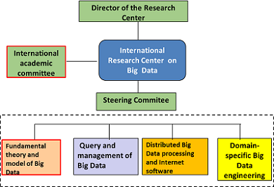

International Research Center on Big Data is under the leadership of its director and is guided by the academic committee evaluation system.
The academic committee of RCBD is responsible for the guidance on research directions, review of research programs and proposal for the center's strategic planning. The committee is composed of world-famous scientists from various fields.
A steering committee is set up to manage communications between different research departments and project teams.
